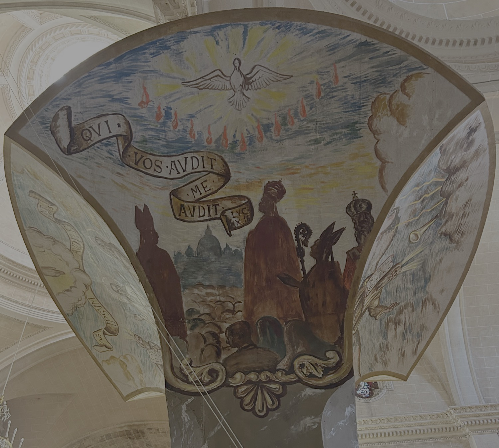

Aquest fresc il·lustra un episodi narrat a l’Evangeli de sant Lluc (10:1-16), en el qual Jesús designa setanta-dos deixebles i els envia a predicar. La filactèria reprodueix les seves paraules: «Qui vos escolta a vosaltres, m’escolta a mi». A la pintura hi apareix una multitud de persones, inclosos reis i càrrecs eclesiàstics, reunida davant la basílica de Sant Pere de Roma mentre l’Esperit Sant davalla sobre ells en forma de llengües de foc, símbol de la inspiració divina necessària per a la propagació de l’Evangeli. La composició representa així l'encàrrec de difondre el missatge cristià entre tots els pobles sota la guia de l’Esperit Sant.
Els frescos del tornaveu de la trona són obra de Mn. Llorenç Bonnín (1952). El tornaveu reprodueix la forma del que Antoni Gaudí dissenyà per a la trona major de la Seu, retirat l'any 1971.